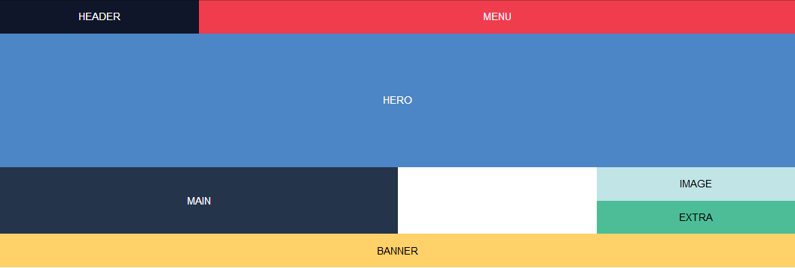

CSS Grid Layout
by Vitali HantarenkaPresentation plan
- Useful links
- Browser support
- What is a Grid?
- Create a simple layout
Useful Links
Browser support
What is CSS Grid Layout?
“CSS Grid introduces a two-dimensional grid system to CSS. Grids can be used to lay out major page areas or small user interface elements.”
Flexbox & Grid model
Flexbox Model
One-dimensional grid system
Grid Model
Two-dimensional grid system

Examples

Get started
Step 1
HTML code:
<header>header</header>
<nav class="menu">menu</nav>
<section class="hero">hero</section>
<main>main</main>
<div class="image">image</div>
<div class="extra">extra</div>
<div class="banner">banner</div>
Browser window:

Step 2
CSS code:
.container {
display: grid;
grid-template-areas: 'header menu menu menu'
'hero hero hero hero'
'main main . image'
'main main . extra'
'banner banner banner banner';
}
header {
grid-area: header;
}
.menu {
grid-area: menu;
}
.hero {
grid-area: hero;
}
main {
grid-area: main;
}
.image {
grid-area: image;
}
.extra {
grid-area: extra;
}
.banner {
grid-area: banner;
}
Browser window:
Step 3
CSS code:
.container {
display: grid;
grid-template-areas: 'header menu menu menu'
'hero hero hero hero'
'main main . image'
'main main . extra'
'banner banner banner banner';
grid-template-rows: 50px 200px 50px 50px 50px;
grid-template-columns: 1fr 1fr 1fr 1fr;
}
Browser window:
Step 4
CSS code:
@media (max-width: 900px) {
.container {
grid-template-areas: 'header header header header'
'hero hero hero hero'
'menu main main main'
'menu banner banner banner'
'menu extra extra image';
grid-template-rows: 50px 150px 100px 50px 50px;
grid-template-columns: 1fr 1fr 1fr 1fr;
}
}
@media (max-width: 500px) {
.container {
grid-template-rows: 50px 50px 100px 100px 50px 50px 50px;
grid-template-columns: 1fr;
grid-template-areas: 'header'
'menu'
'hero'
'main'
'banner'
'extra'
'image';
}
}
Browser window:
Window width is 900px:
Window width is 500px:
Final step
CSS code:
.container > * {
display: flex;
align-items: center;
justify-content: center;
}
Result
Link to CodePenDesctop:
Tablet:
Mobile: